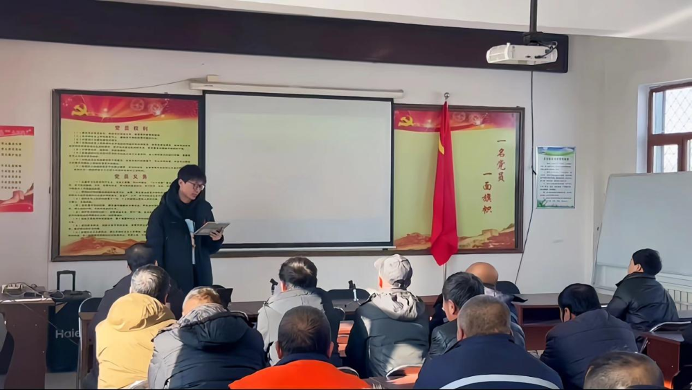
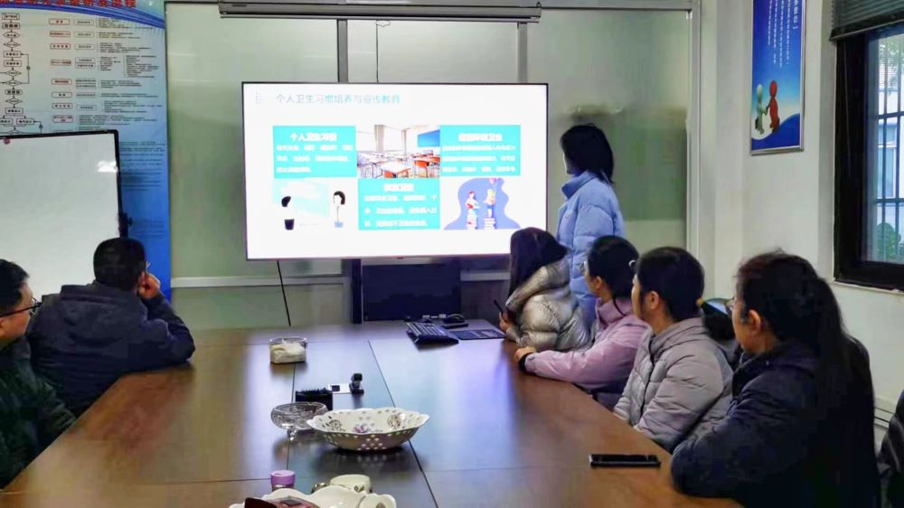
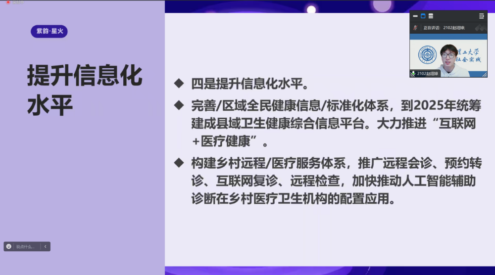
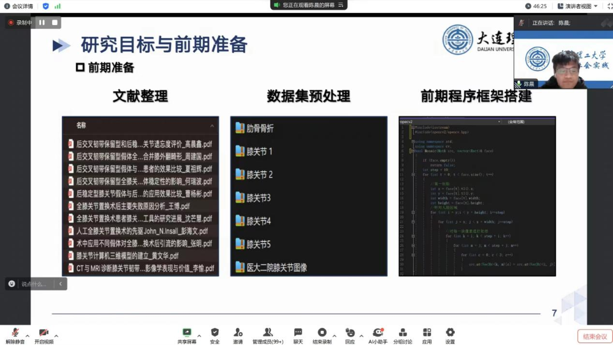

科创兴国的号角唤醒崭新的岁月，迎冬绽放的腊梅书写新春的气息。来自大连理工大学的“紫韵·星火”实践团将线上与线下相结合，开展四场宣讲活动，以昂扬的青春面貌感受时代变化。以向上的青春姿态发挥自身力量。
探访乡村健康，助力乡村医疗
“紫韵·星火”社会实践团积极响应乡村医疗服务的呼声，前往辽宁省候贝营子村开展了医疗宣讲活动。本次宣讲活动的主题是“聚焦医疗，健康未来”。实践团成员赵翊焯围绕村庄医疗资源、健康管理等方面进行了深入浅出的讲解，旨在提高村民的健康意识和医疗水平，介绍了乡村医疗点的发展和政府对医疗事业的支持，并倡导充分利用现代医疗科技，助力全面小康目标的实现。
为进一步巩固宣讲成果，我们将继续加强与村民的沟通与交流，深入了解他们的健康需求。同时，将根据村民们的建议和意见，积极改进和优化医疗服务，提高医疗水平。此外，还将加强与其他部门的合作与协调，共同推进乡村医疗卫生事业的发展。
深入乡村调研，脚踏实地走访
“紫韵·星火”社会实践团积极响应科技创新赋能乡村医疗的号召，前往山东省滕州市开展基础卫生知识普及宣讲会。本次活动旨在普及卫生知识，提高农村地区居民对于日常卫生和预防性健康措施的认识，帮助村民构建更加健康的生活环境，确保村民健康福祉。
在本次宣讲会上，实践团成员靳思齐就重要和常见的卫生主题进行了深入浅出的讲解，诸如个人卫生的重要性、食品安全与卫生、常见疾病的预防与控制、以及必要的急救技能等。
本次宣讲会得到了与会村民的广泛认可，反响热烈。活动最终在一片温馨和谐的氛围中圆满结束。实践团将继续携手社区组织，推动农村卫生事业的发展。
乡村医疗普及，星火也可燎原
为了加强我国农村医疗基础设施现状与建设工作的普及，“紫韵·星火”社会实践团在线上举办一场关于我国农村医疗基础设施现状与建设工作的宣讲，共有129位参会人员。实践团成员赵翊焯深入剖析了乡村医疗设施的现状及未来发展方向，对于乡村医疗卫生体系的发展提出了一系列举措。
宣讲会着重介绍了乡村医疗设施建设的主要内容和改革举措，强调了优化机构布局、提升服务能力和水平、加强疾病预防控制能力以及推进信息化的重要性。在未来，“紫韵·星火”实践团将相应时代号召，进一步深化医疗卫生体制改革，将知识应用于实践，加快推进乡村医疗设施建设，为农村居民提供更加便捷、优质的医疗卫生服务，助力乡村振兴和农民群众健康全面发展。
科技助力医疗，共创美好未来
以科研成果应用实践，助力乡村医疗，实现乡村振兴为目的，“紫韵·星火”实践团在线上开展了项目介绍会。实践团成员陈晨结合实验室项目，将专业知识应用于乡村医疗。项目旨在提升全膝关节假体设计质量，科学合理地规划手术策略，降低二次手术的发生率，为个性化、精准化手术的发展提供技术方法和科学数据。
乡村振兴的目标是促进农村经济社会的全面发展，而健康是人民幸福生活的重要保障。通过推进科技医疗，可以提升乡村医疗水平，改善农村居民的健康状况，增强其生产力和生活质量，同时也为医学科技的进步和个性化医疗的发展提供了有力支持。
 返回
返回